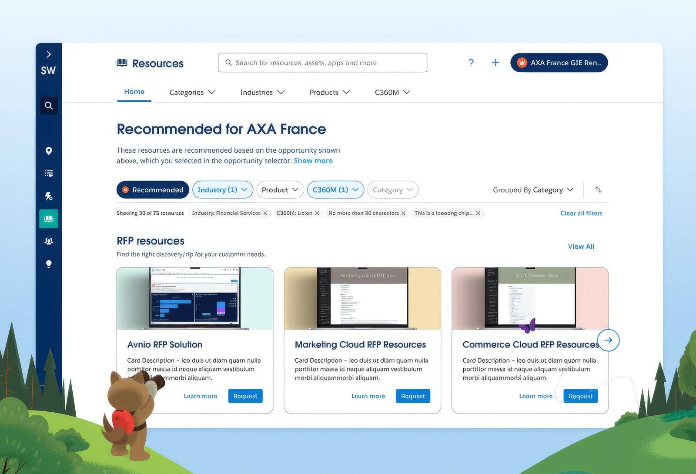
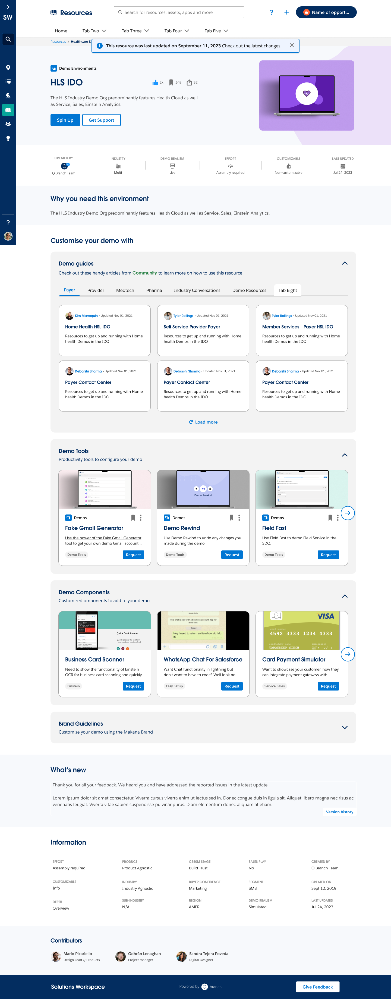
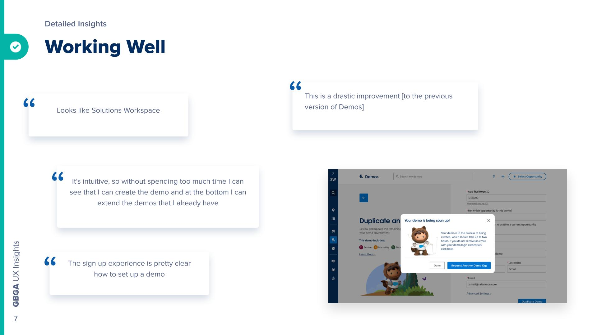
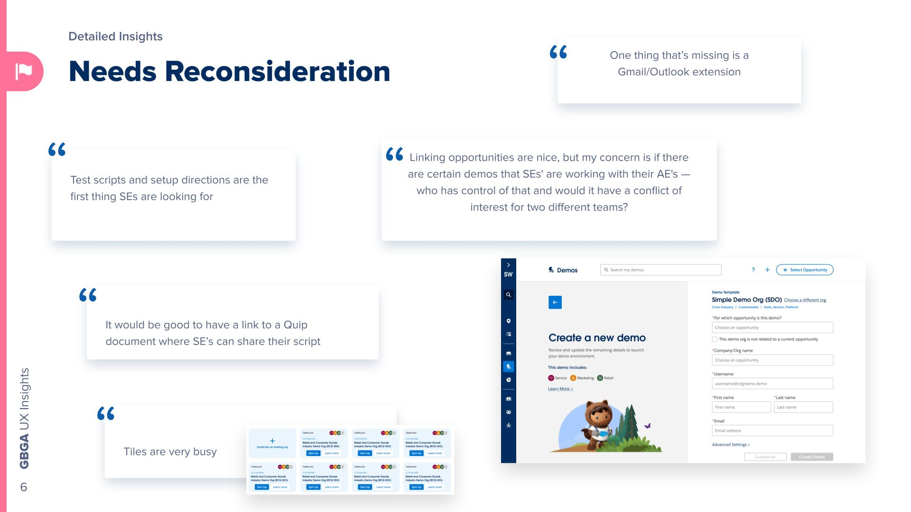

From scattered assets to a platform 16.9K people use
Solutions Workspace is where Salesforce sellers go every day to find resources and run demos. Over two-plus years, I redesigned its navigation, demo experience, and content templates, and helped shape what comes next.

Rebuilding navigation from scratch, mid-reorg.
Sales teams use Resources to find the materials they need, but the old experience was messy and hard to trust. With a fellow designer, I rebuilt the information architecture, navigation, and content templates from the ground up.
- Strategy: A brand-new information architecture, with no blueprint to copy.
- Research: Interviews with sales engineers and account executives about what they actually need.
- Personas and flows: Built to guide every design decision.
- Prototyping: Wireframes and prototypes, tested and iterated.
- Shipping: Partnered with developers, ran a QA bug bash, and kept stakeholders in the loop.
New features included filter pills, multi-select filters, expanding side panels, and "official" stamps so people knew which content to trust.
The result: Resources became the second most-clicked destination in Solutions Workspace.
One place to find and manage demos.
Sales engineers spent more time building and customizing demos than on any other task, and they had to jump between scattered tools to do it. I joined at planning, owned the UI redesign and new sign-up flow, and ran unmoderated testing with SEs and AEs before we shipped.
"A drastic improvement."
Usability test participant"It's intuitive, so without spending too much time I can see that I can create the demo."
Usability test participant
Is the platform working, and are sellers ready for AI?
Leadership wanted to know how well Solutions Workspace was working and whether sellers were ready for AI. I contributed to a large study with the design team:
32
Sales engineers
179
Account executives
9
Stakeholder interviews
What we found
- Usage is concentrated: AEs spend most of their time in Value and Demos.
- Discoverability is the gap: The top AE pain point was "I don't know where to start or what's available."
- AEs are ready for AI: They want automation that cuts manual effort.
- Enablement matters: Better onboarding would drive adoption of features that already exist.


Not every piece of content should look the same.
Apps, demos, and assets all used the same layout, which made things harder to find and use. I led the problem framing and designed a template for each content type.
- Interviewed content authors and tested wireframes with sales engineers.
- Ran a FigJam AI workshop and led enablement sessions with the content team.
- Shipped templates for App, Demo Environment, and Asset, then extended them to Services.
- Built a spec'd Figma production template and reusable components, like a stepper and an accordion.
- Trained a non-design team to use Figma so they could keep the system going.

Handoff is a design problem too.
Strategy and design need to be in the room from the beginning. And handoff isn't where design ends. Sit with the receiving team until the system works for how they operate.